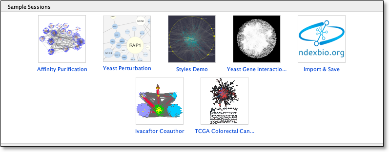
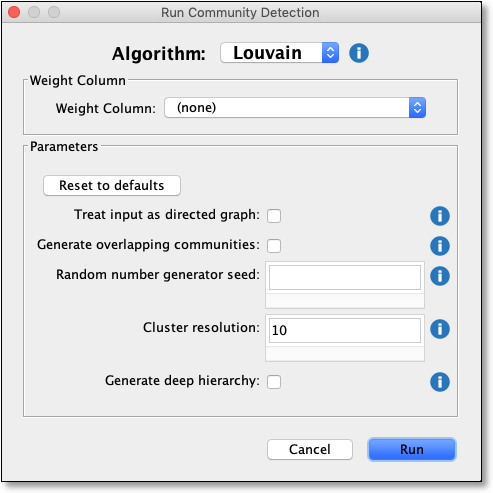
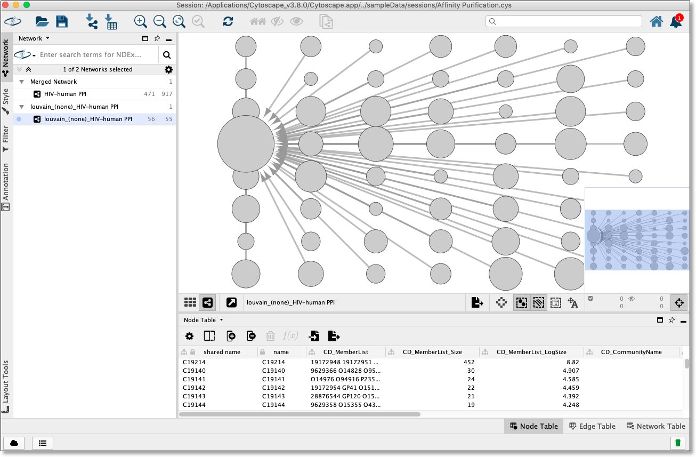
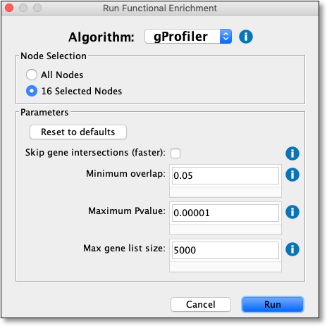
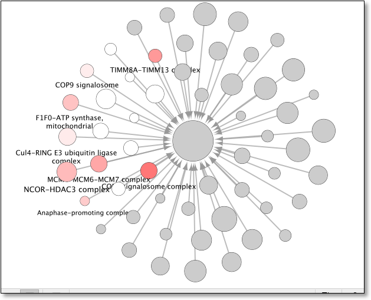
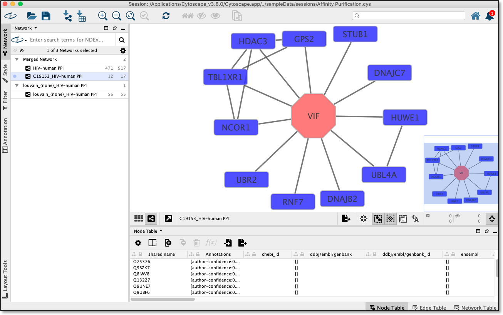
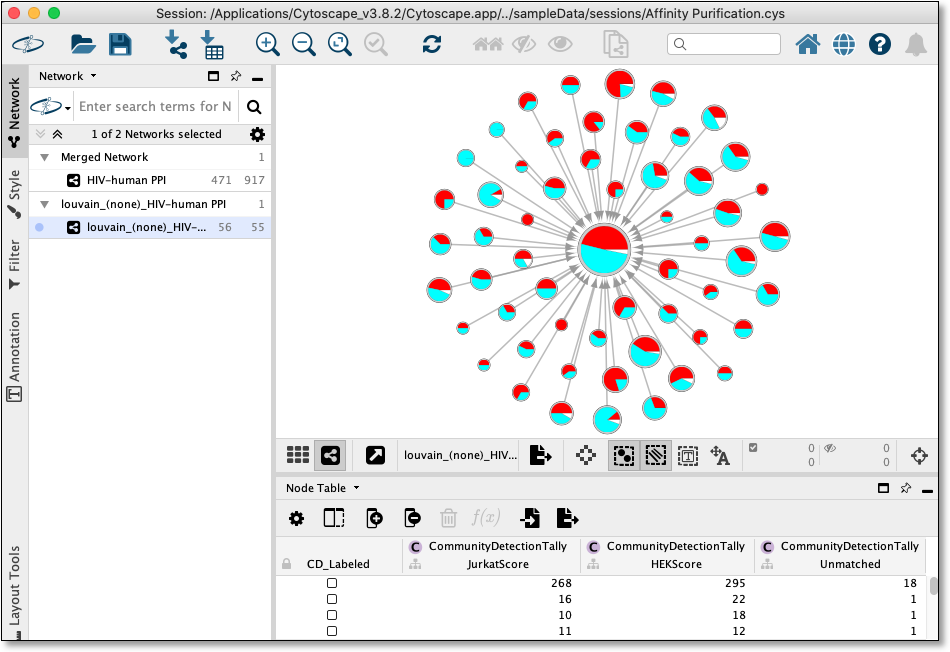
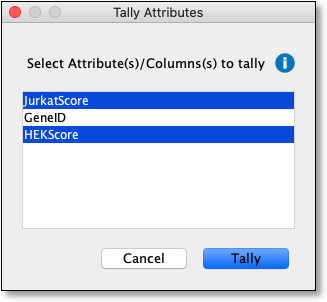
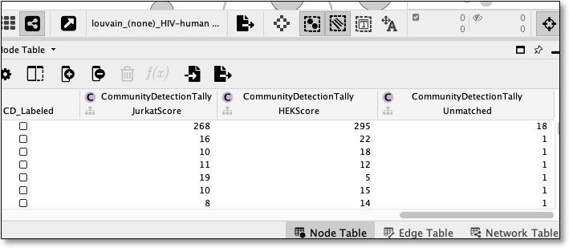

Community Detection Application and Service
CDAPS performs multiscale community detection and functional enrichment for network analysis in Cytoscape. The app integrates popular community detection algorithms and enrichment tools through a service-oriented architecture.
This tutorial consists of two workflows:
- Basic workflow describing app installation, running community detection, functional enrichment, and viewing cluster interactions.
- Tally workflow describing how to count parent-network attributes on a CDAPS hierarchy and use the resulting columns for visualization.

Setup
- Install and launch Cytoscape. CDAPS requires Cytoscape version 3.7 or newer.
- Click here to install it directly from the AppStore.
- CDAPS algorithms and enrichment tools run on a remote server, so this workflow requires an active internet connection.
Supported Analyses
CDAPS provides community detection and functional enrichment from Cytoscape menus and context menus.
- Community detection algorithms include Louvain, Infomap, OSLOM, CliXO, and HiDeF.
- Functional enrichment tools include g:Profiler, Enrichr, and iQuery.
- The tutorial below uses Cytoscape's built-in Affinity Purification starter network and the Louvain algorithm.
Basic Workflow: Open a Network
- Start with a new Cytoscape session.
- In the
Starter Panel , clickAffinity Purification to load the example network. - If the Starter Panel is not visible, select
View → Show Starter Panel . - Community Detection requires an open network before the app can generate a hierarchy.

Run Community Detection
- With the network loaded, select
Apps → Community Detection → Run Community Detection . - In the dialog, choose
Louvain from the algorithm drop-down. - Click
Run .

Community Detection Results
CDAPS creates a new hierarchy network using the current default layout.
- Each hierarchy node represents a cluster.
- Cluster members are stored in the
CD_MemberList node column. - The hierarchy can be used for downstream enrichment, interaction inspection, and attribute tallying.

Functional Enrichment
- In the hierarchy network, select one or more cluster nodes.
- Right-click a selected node and choose
Apps → Community Detection → Run Functional Enrichment . - In the dialog, select
gProfiler from the algorithm drop-down and clickRun .

Functional Enrichment Results
After enrichment completes, CDAPS names and colors selected hierarchy nodes according to term overlap.
- Use the enriched hierarchy to identify biological themes in clusters.
- Repeat enrichment on different selected hierarchy nodes as needed.

View Interactions
- Select a single node in the hierarchy network.
- Right-click the selected node and choose
Apps → Community Detection → View Interactions for Selected Node . - CDAPS displays the corresponding cluster members and their interactions in the parent network.

Tally Workflow
- Run this workflow after creating a hierarchy with CDAPS.
- Use it when parent-network node columns encode phenotypes, classes, scores, or other attributes that should be summarized per cluster.
- The resulting hierarchy columns can be mapped to Cytoscape visual properties or node charts.

Prepare Attributes
- Select a hierarchy network created by CDAPS.
- The hierarchy node
CD_MemberList column identifies the parent-network nodes in each cluster. - Tally can use parent-network columns of type Integer, Boolean, or Double.
- For each selected column, CDAPS counts the cluster members with true or positive values.
Run Tally Attributes
- Select
Apps → Community Detection → Tally Attributes on Hierarchy . - In the dialog, select one or more eligible parent-network columns.
- Click
OK to add tally columns to the hierarchy node table.

Tally Results
- New hierarchy node columns use the selected parent column names with the
CommunityDetectionTally namespace. - CDAPS also adds
CommunityDetectionTally::Unmatched to count cluster members that do not match any selected attribute. - When tally is rerun, existing columns in the
CommunityDetectionTally namespace are removed before new results are written.

Tally Notes
- Boolean columns are counted when the member value is true.
- Integer columns are counted when the member value is positive.
- Double columns are rounded to the nearest integer before CDAPS checks whether the value is positive.
- Counts are written to the hierarchy network, leaving the parent network columns unchanged.
Visualize Tally Results
The tally columns can be used like any other Cytoscape table columns.
- Map a tally column to node size, node fill color, or labels to emphasize cluster composition.
- Use Cytoscape node charts to display multiple tally columns on each hierarchy node.
- Save the hierarchy and parent network together with
File → Save Session .
Saving and Exporting Results
Cytoscape provides a number of ways to save CDAPS results and visualizations:
- As a session:
File → Save Session ,File → Save Session As... - As an image:
File → Export → Network to Image... , selecting for example pdf or png from theExport File Format drop-down. - To a public repository:
File → Export → Network to NDEx